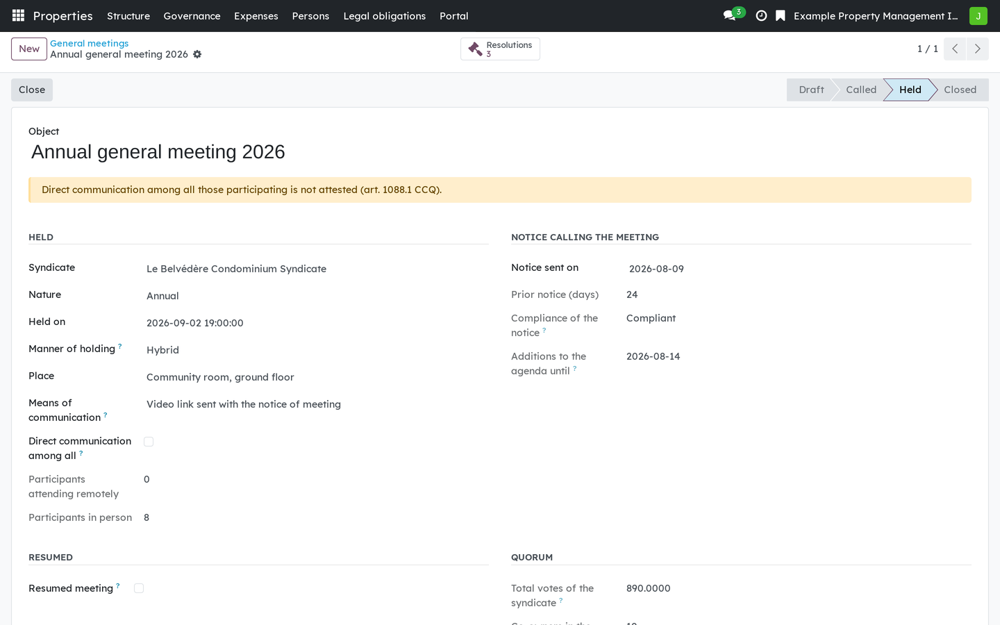
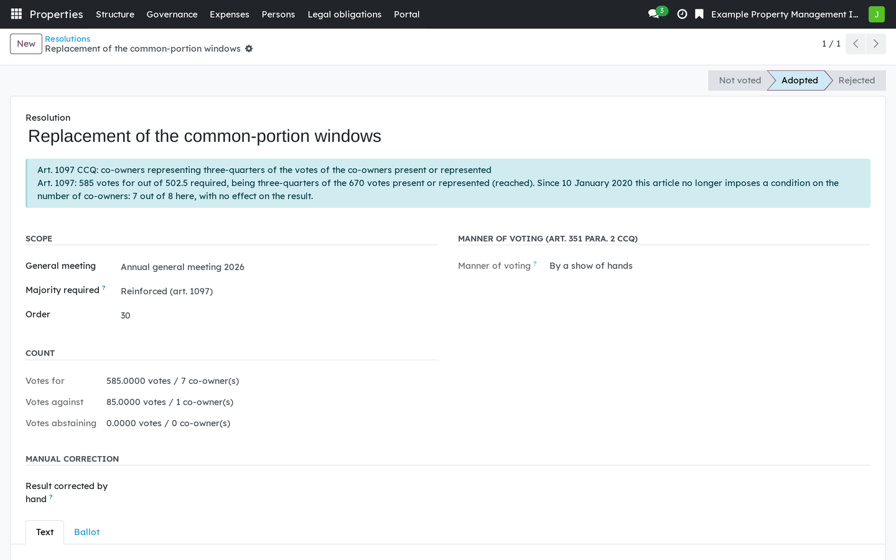
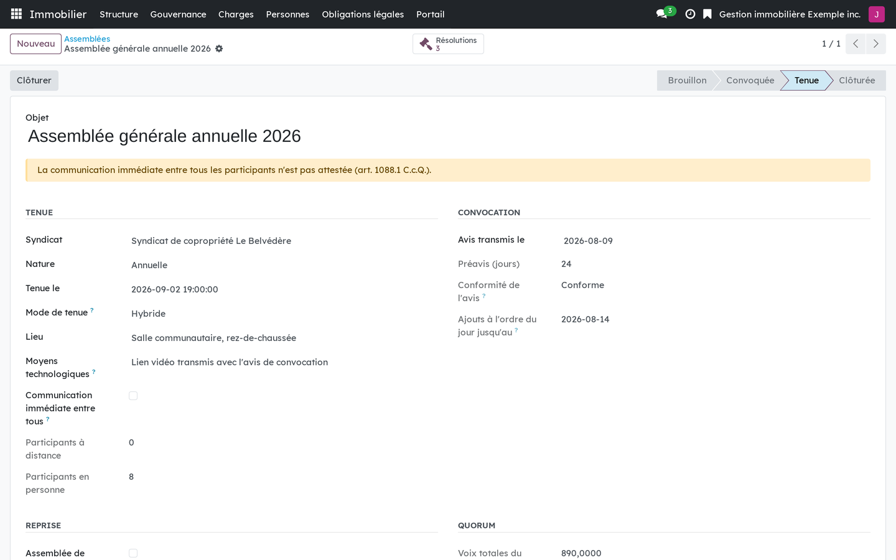
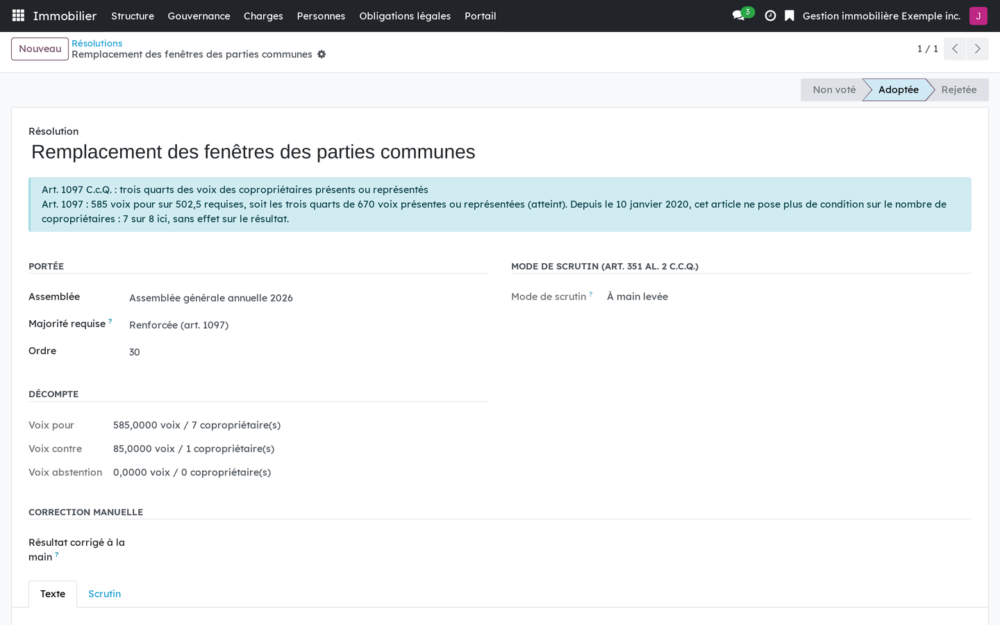

Version française plus bas.
In a syndicate of co-ownership, an error in counting the votes is a ground to annul a decision of the general meeting, and the action is open for 90 days (art. 1103 CCQ). Article 1101 deems unwritten any stipulation of the declaration that changes the number of votes required, so a majority percentage that a user can configure would be a defect. This module encodes the statutory thresholds instead, and shows the article it applied next to every result.

A general meeting: notice, mode of participation, attendance and quorum.

A resolution counted under art. 1097: the rule, the votes required and the result, side by side.
This is software, not legal advice. The syndicate remains responsible for the decisions of its meeting.
Requires Properties: foundation (bf_property_core). Common expenses and
calls for contributions (bf_property_finance) build on it: the budget
records the meeting that was consulted, and arrears of more than three months are
proposed as a deprivation of the right to vote on the attendance lines. Electronic
signature (bf_property_sign) can send the minutes for signature.
Business Source License 1.1. You may use this module in production for your own internal business operations, which include administering immovables that you own or that you are constituted to administer, and letting a person acting on your behalf use your instance for that purpose. Administering immovables for the account of others, or providing the module to third parties as a product or service, whether hosted, managed or resold, requires a separate written agreement with the licensor. Each version converts to LGPL-3.0-or-later on the Change Date stated in the LICENSE file, which sets out the exact terms.
Dans un syndicat de copropriété, une erreur dans le calcul des voix est un motif d'annulation d'une décision de l'assemblée, et le recours reste ouvert 90 jours (art. 1103 C.c.Q.). L'art. 1101 répute non écrite toute stipulation de la déclaration qui modifie le nombre de voix requis : un pourcentage de majorité paramétrable serait donc un défaut. Le module code les seuils de la loi, et affiche à côté de chaque résultat l'article qu'il a appliqué.

Une assemblée : convocation, mode de tenue, présences et quorum.

Une résolution comptée selon l'art. 1097 : la règle, les voix requises et le résultat, côte à côte.
Ce logiciel ne donne pas d'avis juridique. Le syndicat reste responsable des décisions de son assemblée.
Exige Immeubles : socle (bf_property_core). Copropriété : charges et
appels de fonds (bf_property_finance) s'appuie sur ce module : le budget
consigne l'assemblée consultée, et les arrérages de plus de trois mois sont proposés
comme privation du droit de vote sur les lignes de présence. Copropriété : signature
électronique (bf_property_sign) peut faire signer les procès-verbaux.
Business Source License 1.1. Vous pouvez utiliser ce module en production pour vos propres activités internes, ce qui comprend l'administration des immeubles dont vous êtes propriétaire ou que vous êtes constitué pour administrer, et l'usage de votre instance à cette fin par une personne qui agit pour votre compte. Administrer des immeubles pour le compte d'autrui, ou fournir le module à des tiers comme produit ou service, hébergé, géré ou revendu, exige une entente écrite distincte avec le concédant. Chaque version passe sous LGPL-3.0 ou ultérieure à la date de changement inscrite au fichier LICENSE, qui fait foi.